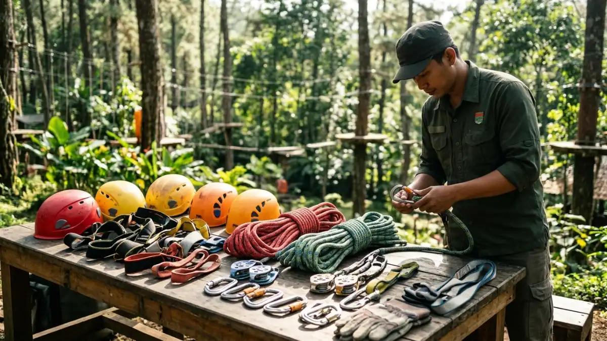

Memilih penyedia outbound di Kediri Pare memerlukan penilaian
cermat terhadap pengalaman fasilitator dan standar keselamatan. (Ilustrasi)
Memilih penyedia outbound di Kediri Pare memerlukan penilaian
cermat terhadap pengalaman fasilitator dan standar keselamatan. (Ilustrasi)
Penyedia outbound Kediri Pare yang baik memiliki fasilitator berpengalaman, prosedur keselamatan tertulis, peralatan terawat, asuransi peserta, dan program yang sesuai tujuan kelompok.
- Nilai penyedia dari keselamatan, pengalaman fasilitator, kejelasan program, dan transparansi biaya.
- Minta rincian tertulis tentang pendamping, peralatan, asuransi, dan prosedur darurat.
- Kapolres Kediri meninjau dua objek wisata pada 24 Maret 2026 untuk memastikan kesiapan pengamanan wisatawan.
- Harga termurah bukan satu-satunya dasar keputusan.
- Kunjungan lokasi atau konsultasi awal membantu menilai kesiapan penyedia.
DAFTAR ISI
- 1. Apa Kriteria Penyedia Outbound yang Baik?
- 2. Mengapa Keselamatan Harus Menjadi Prioritas Utama?
- 3. Pertanyaan Apa yang Perlu Diajukan Sebelum Memesan?
- 4. Bagaimana Cara Menilai Fasilitator Outbound?
- 5. Apa yang Perlu Diperiksa pada Lokasi dan Fasilitas Outbound?
- 6. Apakah Perlu Mengunjungi Lokasi atau Berkonsultasi Terlebih Dahulu?
- 7. Apa Tanda Peringatan yang Perlu Diwaspadai?
- 8. Kesimpulan
- 9. FAQ
Apa Kriteria Penyedia Outbound yang Baik?
Kriteria penyedia outbound yang baik meliputi pengalaman fasilitator, standar keselamatan, peralatan terawat, program yang fleksibel, komunikasi yang jelas, dan rincian biaya yang transparan.
Pengalaman fasilitator terlihat dari kemampuan memandu kelompok dengan beragam usia dan menjelaskan tujuan setiap permainan.
Fasilitator yang baik bukan hanya memimpin permainan, tetapi juga mengajukan pertanyaan refleksi sehingga peserta memahami pelajaran dari pengalaman tersebut.
Standar keselamatan mencakup pengarahan awal, peralatan pengaman, rasio pendamping, dan prosedur darurat. Peralatan yang terawat, bersih, dan layak pakai menjadi indikator kesungguhan penyedia.
Program yang fleksibel juga penting. Penyedia yang baik bersedia menyesuaikan permainan dengan tujuan dan kondisi peserta, bukan hanya menawarkan satu paket baku untuk semua kelompok.
Komunikasi yang cepat dan jelas sejak tahap konsultasi biasanya mencerminkan pelayanan saat kegiatan berlangsung.
Mengapa Keselamatan Harus Menjadi Prioritas Utama?
Keselamatan harus menjadi prioritas karena kegiatan outbound melibatkan aktivitas fisik di ruang terbuka, sehingga kesiapan peralatan, pendampingan, dan prosedur darurat langsung menentukan risiko cedera peserta.
Perhatian terhadap keselamatan wisatawan juga terlihat dari aparat daerah. Dikutip dari RRI Kediri, Kapolres Kediri meninjau dua objek wisata pada 24 Maret 2026 untuk memastikan kesiapan personel dan kelancaran aktivitas pengunjung menjelang lonjakan wisatawan libur Lebaran 1447 Hijriah.
Peninjauan itu menunjukkan bahwa keselamatan di area wisata menjadi perhatian publik di Kabupaten Kediri.
Untuk outbound, penyedia perlu memiliki rencana jelas bila terjadi cedera ringan maupun serius. Rencana itu mencakup kotak pertolongan pertama, orang yang bertugas menghubungi layanan medis, dan rute menuju fasilitas kesehatan terdekat. Penyedia yang tidak mampu menjelaskan hal ini layak dipertanyakan.

Kesiapan dan kelaikan peralatan keselamatan menjadi indikator utama profesionalitas penyedia outbound. (Ilustrasi)Pertanyaan Apa yang Perlu Diajukan Sebelum Memesan?
Sebelum memesan penyedia outbound, tanyakan siapa fasilitatornya, berapa rasio pendamping, apa peralatan keselamatannya, apakah ada asuransi, bagaimana prosedur darurat, dan apa kebijakan pembatalan.
Berikut pertanyaan yang sebaiknya diajukan secara tertulis agar jawabannya dapat dijadikan arsip:
- Siapa fasilitator yang bertugas dan apa pengalamannya dengan kelompok seperti kelompok Anda?
- Berapa jumlah pendamping untuk jumlah peserta tertentu?
- Peralatan keselamatan apa saja yang digunakan dan bagaimana perawatannya?
- Apakah peserta dilindungi asuransi dan apa cakupannya?
- Apa rencana bila hujan atau cuaca buruk?
- Bagaimana kebijakan pembatalan dan perubahan jadwal?
Jawaban tertulis membantu menghindari salah paham di kemudian hari. Pembahasan komponen harga yang terkait dengan pertanyaan di atas tersedia pada artikel biaya outbound di Kediri Pare dan faktor penentu harga paket.
Bagaimana Cara Menilai Fasilitator Outbound?
Fasilitator outbound dinilai dari pengalaman memandu kelompok, kemampuan menjelaskan tujuan, kepekaan terhadap kondisi peserta, ketegasan soal keselamatan, dan keterampilan memimpin sesi refleksi.
Mintalah contoh rangkaian kegiatan yang pernah dijalankan dengan kelompok serupa. Fasilitator yang berpengalaman dapat menjelaskan mengapa suatu permainan dipilih, apa tujuan yang ingin dicapai, dan bagaimana menyesuaikannya bila peserta kurang antusias.
Perhatikan juga cara fasilitator berkomunikasi. Fasilitator yang baik menyampaikan aturan dengan jelas, tetap ramah, dan berani menghentikan permainan bila ada risiko.
Kemampuan memimpin refleksi sering menjadi pembeda, karena manfaat terbesar outbound muncul ketika pengalaman permainan dihubungkan dengan situasi nyata di kelas atau kantor.
Apa yang Perlu Diperiksa pada Lokasi dan Fasilitas Outbound?
Lokasi dan fasilitas outbound perlu diperiksa dari kondisi area, naungan, toilet, air bersih, tempat berkumpul, akses kendaraan, dan ketersediaan rencana cadangan bila hujan.
Area kegiatan sebaiknya bersih, rata, dan bebas benda berbahaya. Tempat teduh membantu peserta beristirahat, sedangkan toilet dan air bersih menjadi kebutuhan dasar. Akses kendaraan penting bagi rombongan bus dan keadaan darurat.
Bagi rombongan yang juga ingin berwisata, lokasi di Kabupaten Kediri menawarkan beberapa pilihan. Panduan menyeluruh tentang tujuan dan alur outbound tersedia di artikel outbound Kediri Pare untuk sekolah, perusahaan, dan komunitas.
Pastikan juga tersedia ruang cadangan bila cuaca berubah. Kegiatan berbasis diskusi atau permainan ringan dapat dipindahkan ke area teduh agar jadwal tidak terganggu.
Apakah Perlu Mengunjungi Lokasi atau Berkonsultasi Terlebih Dahulu?
Mengunjungi lokasi atau berkonsultasi lebih dahulu sangat disarankan karena kondisi lapangan, kapasitas, dan sikap tim penyedia lebih mudah dinilai langsung daripada lewat iklan.
Kunjungan singkat memungkinkan koordinator melihat kondisi area, peralatan, dan interaksi tim penyedia.
Bila kunjungan sulit dilakukan, minta panggilan video atau dokumentasi kegiatan terbaru, lalu ajukan pertanyaan yang sama kepada setiap calon penyedia agar penilaiannya setara.
Setelah konsultasi, tuliskan kesepakatan berupa jadwal, rangkaian kegiatan, daftar komponen, dan biaya. Dokumen sederhana ini membantu kedua pihak memiliki pegangan yang sama.
Apa Tanda Peringatan yang Perlu Diwaspadai?
Tanda peringatan penyedia outbound meliputi jawaban keselamatan yang tidak jelas, harga jauh di bawah pasaran tanpa rincian, tidak ada asuransi, dan peralatan rusak.
Jawaban yang berputar-putar ketika ditanya soal prosedur darurat menandakan persiapan yang lemah. Janji hasil yang berlebihan, misalnya menjamin kekompakan tim dalam satu hari, juga perlu diwaspadai karena hasil outbound bergantung pada banyak faktor.
Bila beberapa tanda muncul bersamaan, pertimbangkan penyedia lain. Rujukan ke jenis permainan yang wajar untuk kelompok Anda dapat dilihat pada artikel jenis permainan outbound dan contoh rundown di Kediri Pare, sehingga Anda dapat menilai apakah usulan penyedia masuk akal.
Kesimpulan
Memilih penyedia outbound Kediri Pare berarti menilai keselamatan, fasilitator, peralatan, program, dan transparansi biaya secara tertulis sebelum memutuskan memesan paket kegiatan.
Susun daftar pertanyaan yang sama untuk semua calon penyedia, minta penawaran tertulis, dan bila memungkinkan lihat lokasi secara langsung.